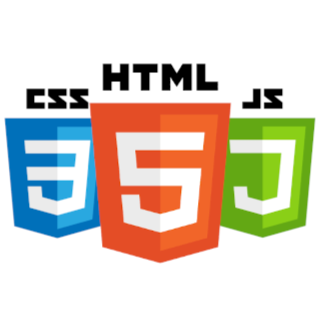

Kai Kono
About Me
2003年に東京で生まれ、7歳から13歳の間アメリカのカリフォルニア州にて育ち、帰国後に東京学芸大学附属国際中等教育学校に編入。大学は東京を離れ、兵庫の関西学院大学に入学し、建築学を専攻。趣味はPCゲームとドライブ。
元々ものづくりに興味があり、プログラミングの経験もあったため、これを活かせるため自分に向いていると考えていた建築を専攻しました。しかし、建築の中でも気づけばモデリングソフトウェアやコードを用いる作業を行っていたことに気づき、やはり自分にはデジタルな分野が向いていることに気づきました。中でも、大学で学んだ建築設計と考え方が通ずるソフトウェアのUI・UXを追求したいと考えました。
好みのデザインはシンプル、かつ自然で目に優しいものです。
Skills

TOEFL 110
TOEIC 985
英検１級
アメリカに住んでいた経験から、ネイティブレベルの英語力を習得しました。現在でも当時の友人とこまめに連絡を取り、英語力の維持・向上を心がけています。多言語を習得したことで、より広い視野を持つことができ、考え方の選択肢が増えたと考えています。
HTML / CSS / JavaScript
小学校の頃にアメリカで通っていたプログラミングスクールでHTML・CSSを習得し、独学でjavascriptを習得しました。本ポートフォリオサイトもHTML・CSS・javascriptのみで構成されています。
デザインツール
IllustratorやPhotoshopをはじめ、Figmaなどのツールを使えます。大学の課題のプレゼンテーションボードを作成する際に使用しています。現在も学習中ですが、簡易的なポスターやプレゼンテーション作成のためであれば問題なく使えます。
CAD / BIM
AutoCAD, Revit, Rhinoceros などのソフトウェアが使えます。建築の設計図を作成する際に用いる専門的なソフトウェアですが、これらのソフトを学習したことでモデリングなどの視点・考え方を学べました。